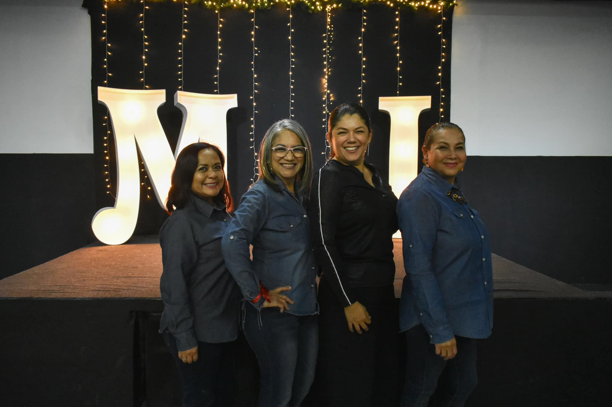
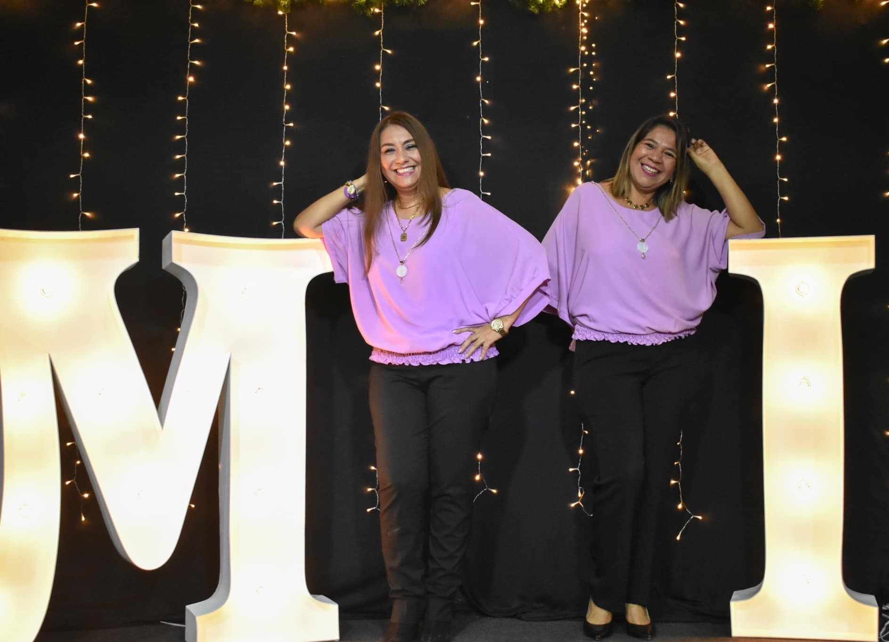
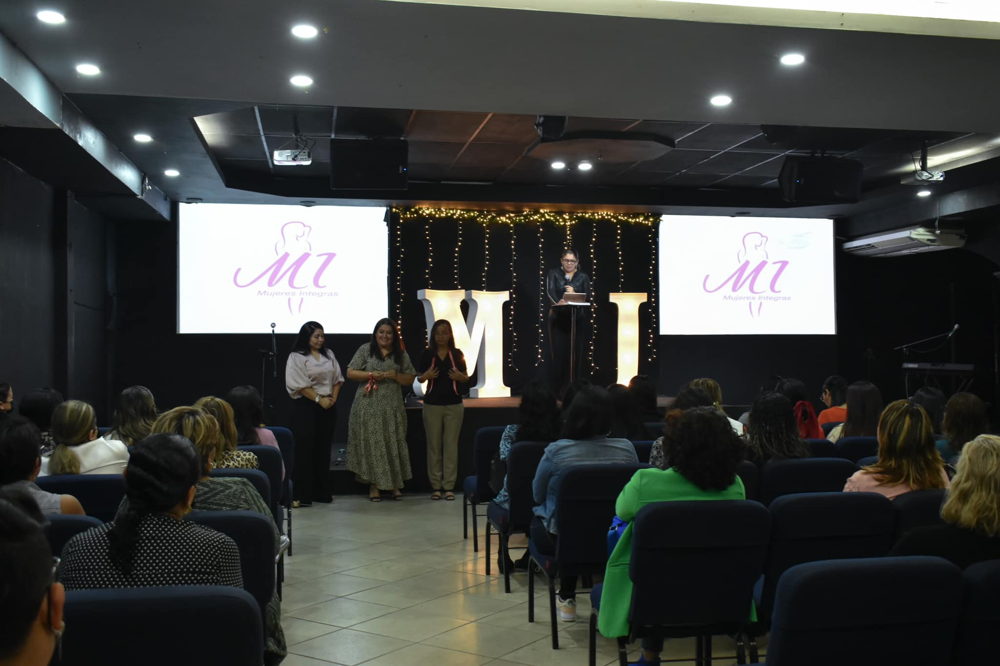

Mujeres MI
Mujeres Integras


El departamento de mujeres MI(Mujeres Integras), forma parte de un grupo de células en casa con la finalidad de mostrar el plan de Dios sobre las mujeres.
La dinamica consiste en la lectura de un libro con temática sobre un problematica relacionada a las mujere. Analisamos y veos que dice Dios a través de su palabra acerca de como deberíamos actuar ante esas circunstancias.
Graduaciones
Al finalizar el libro, nos reunimos para realizar una clausura en donde entregamos reconocimientos a las mujeres que asistieron a sus células en casa y terminaron el libro de manera satisfactoria.
